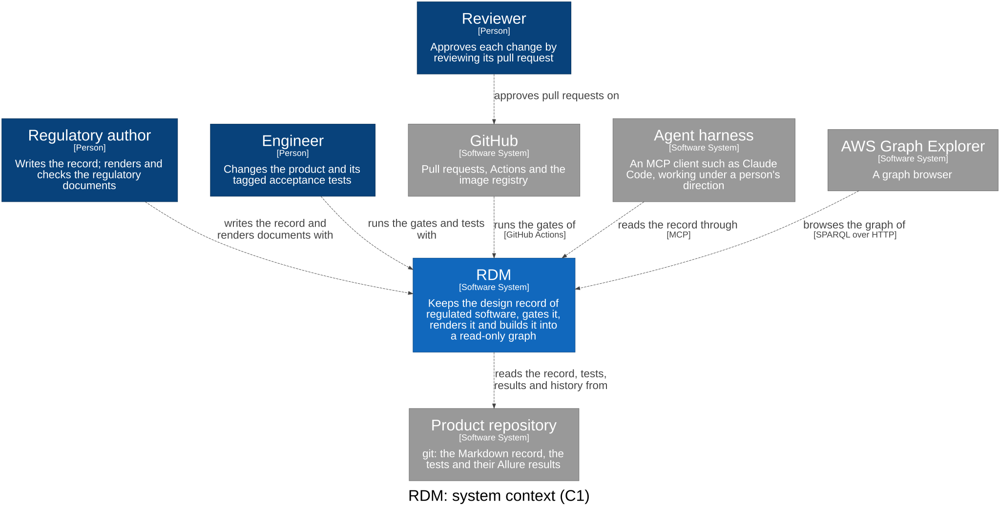
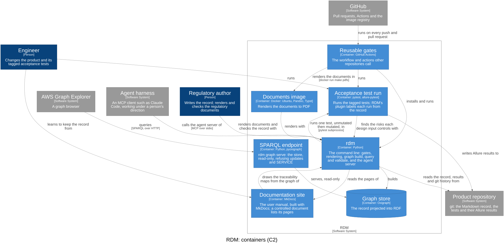

System Architecture¶
Id: SDS-SYS-001 · Context: system · Kernel: rdm/kernel/ · Composition root: rdm/main.py · References: DC-001 · Download as PDF
Bounded contexts¶
| Id | Part | Layer |
|---|---|---|
| specification | Record | 2 |
| risk | Record | 1 |
| architecture | Record | 1 |
| test_evidence | Record | 3 |
| release | Gates | 4 |
| compliance | Gates | 1 |
| graph | Graph | 5 |
| publishing | Documents | 5 |
RDM keeps the design record of regulated software as Markdown and tests in
git, checks it, renders regulatory documents from it, and builds it into a
read-only graph that people and agents query. This document holds design
only — user needs live in the V&V plan; a context serves the needs its
design inputs trace to (traces_to), so that is never declared twice.
The four parts¶
| Part | Responsibility | Writes to the record? |
|---|---|---|
| Record | read and scaffold the record: needs, design inputs, checklists, tagged tests, results, git | scaffolding only (init, adopt, new-input); every other change is a reviewed commit |
| Gates | pass/block decisions on the record | no |
| Graph | the knowledge graph: the record as RDF, queried and validated; agents read it over MCP (rdm graph mcp) |
no — rebuilt from the record, never edited |
| Documents | regulatory documents rendered from the record | no |
Only people and agents change the record, and only through a reviewed pull request; the merge is the approval. Nothing RDM derives (graph, matrix, documents, evidence bundle) is edited by hand or fed back into the record.
System context (C1)¶
Who uses RDM and what it depends on. The architecture is one C4 model, the
workspace c4/workspace.dsl; each view is drawn from
it (rdm c4 draw): the system context and the containers here, and each
bounded context's components (C3) in its own design document. RDM reads the
model (DI-66); warning where code, tests and the model disagree (DI-68) is
not built yet.

Containers (C2)¶
What runs or stores data. The bounded contexts are logical slices of these
containers: most of their components run in rdm, the pytest plugin in the
acceptance test run, and the reusable CI in GitHub Actions.

Bounded contexts (one design document each), by part¶
A bounded context is drawn where the language changes, not where the workflow
does (CONTEXT.md): the stages of a design input's life (declared, approved,
verified, released) are not contexts. Restructured in Design Review 30 from
ten contexts named for what their code did or for a workflow stage.
| Part | Context | Design document | Its language | Package |
|---|---|---|---|---|
| Record | specification (core) |
design/specification.md |
user need, design input, tagged test, design review, approved, design gate | rdm/specification/: the record reader, test tags, design gate, new-input, hooks, init, adopt, validation records, persona runs |
| Record | risk |
design/risk.md |
hazard, harm, severity, probability, control, residual | rdm/risk/ |
| Record | architecture |
design/architecture.md |
person, software system, container, component, relationship, view | rdm/architecture/: the model reader, rdm c4 draw |
| Record | test_evidence |
design/test_evidence.md |
test run, executor, step, attachment; Allure's and xunit's words stop here | rdm/evidence/: Allure results, translate, the mutation probe; and rdm/pytest_plugin.py |
| Gates | release |
design/release.md |
verified, release gate, trace slice | rdm/release/: the release gate, the verification data; and the reusable CI |
| Gates | compliance |
design/compliance.md |
standard, checklist, checklist clause, gap, coverage | rdm/compliance/ |
| Graph | graph |
design/graph.md |
knowledge graph, projection, vocabulary, gate rule, derived relation | rdm/graph/ |
| Documents | publishing |
design/publishing.md |
template, data, rendered document, evidence bundle | rdm/publishing/: render, snippets, DMR index, the verification report, the evidence bundle; and rdm/md_extensions/ and the PDF action |
Not contexts: the shared kernel (rdm/kernel/: YAML and file helpers,
ids, git, frontmatter, the reconcile helpers), below every context; and the
composition root (rdm/main.py), which wires the command line to every
context. Onboarding (init, adopt) is the specification's application
layer. Three paths users name stay where they are: rdm/main.py (the rdm
command), rdm/pytest_plugin.py (imported by a project's conftest.py) and
rdm/md_extensions/ (named in a project's config.yml).
Dependency rule¶
A context imports only contexts of a lower layer, and the shared kernel;
nothing imports a context of the top layer. The layers are in the
frontmatter, and a test fails on any import that breaks the rule, and on any
module that no component of the workspace names
(tests/dependency_rule_test.py).
5 publishing · graph read models: read every context, feed none back
4 release decides: verified status, risk and validation → release
3 test_evidence translates test results into runs of the record's tests
2 specification the core: needs, inputs, tagged tests, review, design gate
1 architecture · risk · compliance leaves: their own languages, nothing but the kernel
0 shared kernel util · ids · git · frontmatter · reconcile
The leaves sit below the core because the core uses them and they use nothing: the design gate checks the architecture views are fresh, the release gate applies the risk rules, and none of the three reads a design input. The evidence bundle renders the matrix and the verification report, so it is publishing's, and realises release's DI-30. The design gate's warnings about executed results are release's: release reads results to decide, so the composition root hands its warnings to the design gate's output, and the specification never reads results.
Flow¶
Specification → its evidence, risks and architecture → Release decides (the
design gate before implementation, the release gate before release; gap
analysis against checklists) → the knowledge graph and the documents are
derived from the same record. Agent skills (how to author design inputs, test-first,
risk analysis) are maintained outside RDM, in scope-impact/agent-skills.
RDM ships no planning tooling: tasks and issues live in their own tools,
outside the record (see docs/about/plan-vs-record.md).
Not yet in scope¶
In rough order: turning a regulation into a checklist mapped to its standard's clauses; pushing the graph to an external RDF store, with the vocabulary and gate shapes versioned; and several projects in one graph (clause identifiers are already project-independent). Each enters through a user need and design inputs in this record before any code.